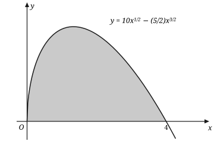

<script src="/assets/redirect.js"></script>
<section class="theory" data-section="P1-9.6">
<h2>9.6 Area under a curve</h2>
<p class="src">Based on Cambridge International AS &amp; A Level Mathematics: Pure Mathematics 1 Coursebook (Sue Pemberton, series editor Julian Gilbey), Chapter 9 Integration, printed pp.253–259. Own wording and new numbers, following the coursebook link between definite integrals and area, regions below the x-axis and areas found with respect to y.</p>
<p class="key-words"><strong>Key words:</strong> <em>area</em>, <em>definite integral</em>, <em>limits</em></p>
<h3>Area as a definite integral</h3>
<p>The <strong>area</strong> of the region bounded by the curve \(y=\mathrm{f}(x)\), the \(x\)-axis and the lines \(x=a\) and \(x=b\), where the curve is above the \(x\)-axis, is</p>
<p>\[\text{Area}=\int_a^b y\,dx.\]</p>
<p>If the curve meets the \(x\)-axis, solve \(y=0\) to find the <strong>limits</strong>.</p>
<div class="ms-widget" data-widget="area-under"></div>
<script src="../../assets/widget-kinds-pkg19.js"></script>
<h3>Regions below the x-axis</h3>
<p>If the region is below the \(x\)-axis, the definite integral is negative; the area is its numerical value. If a region is partly above and partly below, find the two parts separately and add their areas.</p>
<h3>Area between a curve and the y-axis</h3>
<p>The area bounded by a curve, the \(y\)-axis and the lines \(y=c\) and \(y=d\) is \(\displaystyle\int_c^d x\,dy\), with \(x\) written in terms of \(y\).</p>
<div class="worked-example">
<h4>Worked example 1: Above the x-axis</h4>
<p class="src">Coursebook, 9.6, area under a curve. New numbers.</p>
<p>Find the area enclosed by \(y=x(4-x)\) and the \(x\)-axis.</p>
<ol class="steps">
<li>Limits \(x=0\) and \(x=4\) <span class="mark">B1</span></li>
<li>\(\displaystyle\int_0^4(4x-x^2)\,dx=\Bigl[2x^2-\dfrac{x^3}{3}\Bigr]_0^4\) <span class="mark">M1</span></li>
<li>\(=32-\dfrac{64}{3}=\dfrac{32}{3}\) <span class="mark">A1</span></li>
</ol>
<p class="final"><strong>Answer:</strong> \(\dfrac{32}{3}\)</p>
</div>
<div class="worked-example">
<h4>Worked example 2: Below the x-axis</h4>
<p class="src">Coursebook, 9.6, a region below the axis. New numbers.</p>
<p>Find the area enclosed by \(y=x^2-2x\) and the \(x\)-axis.</p>
<ol class="steps">
<li>Limits \(x=0\) and \(x=2\) <span class="mark">B1</span></li>
<li>\(\displaystyle\int_0^2(x^2-2x)\,dx=\Bigl[\dfrac{x^3}{3}-x^2\Bigr]_0^2=\dfrac{8}{3}-4=-\dfrac{4}{3}\) <span class="mark">M1</span></li>
<li>Area \(=\dfrac{4}{3}\) <span class="mark">A1</span></li>
</ol>
<p class="final"><strong>Answer:</strong> \(\dfrac{4}{3}\)</p>
</div>
<h3>Common mistakes</h3>
<ul><li>Giving a negative answer for an area.</li><li>Integrating across a point where the curve crosses the \(x\)-axis, so that the parts above and below cancel.</li><li>Using the wrong limits: always sketch and find where the curve meets the axis.</li></ul>
<h3>Past paper</h3>
<p class="src">9709/12/M/J/23 Q5, official QP and official MS.</p>
<p></p><p>The diagram shows the curve with equation \(y=10x^{\frac{1}{2}}-\frac{5}{2}x^{\frac{3}{2}}\) for \(x\gt 0\). The curve meets the \(x\)-axis at the points \((0, 0)\) and \((4, 0)\).</p><p>Find the area of the shaded region. [4]</p>
<details><summary>Mark scheme</summary>
<ol class="steps">
<li>\(\displaystyle\int\Bigl(10x^{\frac{1}{2}}-\frac{5}{2}x^{\frac{3}{2}}\Bigr)dx=\dfrac{10x^{\frac{3}{2}}}{\frac{3}{2}}\ldots\) <span class="mark">B1</span> Official MS: B1 B1, B1 for the contents of each { } then ISW: {10x^(3/2)/(3/2)} {−5x^(5/2)/(2 × 5/2)} = 20/3 x^(3/2) − x^(5/2); this is the first term.</li>
<li>\(\ldots-\dfrac{5x^{\frac{5}{2}}}{2\times\frac{5}{2}}=\dfrac{20}{3}x^{\frac{3}{2}}-x^{\frac{5}{2}}\) <span class="mark">B1</span> Official MS: second B1, for the second term.</li>
<li>\(\Bigl(\dfrac{20}{3}\times8-32\Bigr)-0\) <span class="mark">M1</span> Official MS: M1, using limit(s) correctly in an integrated expression (defined by one correct power); minimum acceptable working is their (160/3 − 32).</li>
<li>Area \(=\dfrac{64}{3}\) <span class="mark">A1</span> Official MS: A1, 64/3, 21⅓ or 21.3[333…].</li>
</ol>
</details>
<div class="quick-check">
<h4>Quick check 1</h4>
<p>Find the area enclosed by \(y=6x-x^2\) and the \(x\)-axis.</p>
<details><summary>Worked solution</summary>
<ol class="steps"><li>Limits 0 and 6</li><li>\(\Bigl[3x^2-\dfrac{x^3}{3}\Bigr]_0^6=108-72\)</li></ol>
<p class="final"><strong>Answer:</strong> \(36\)</p>
</details>
</div>
<div class="quick-check">
<h4>Quick check 2</h4>
<p>Find the area under \(y=3x^2\) from \(x=1\) to \(x=3\).</p>
<details><summary>Worked solution</summary>
<ol class="steps"><li>\(\Bigl[x^3\Bigr]_1^3=27-1\)</li></ol>
<p class="final"><strong>Answer:</strong> \(26\)</p>
</details>
</div>
<div class="quick-check">
<h4>Quick check 3</h4>
<p>Find the area under \(y=\dfrac{4}{x^2}\) from \(x=1\) to \(x=2\).</p>
<details><summary>Worked solution</summary>
<ol class="steps"><li>\(\Bigl[-\dfrac{4}{x}\Bigr]_1^2=-2+4\)</li></ol>
<p class="final"><strong>Answer:</strong> \(2\)</p>
</details>
</div>
</section>
